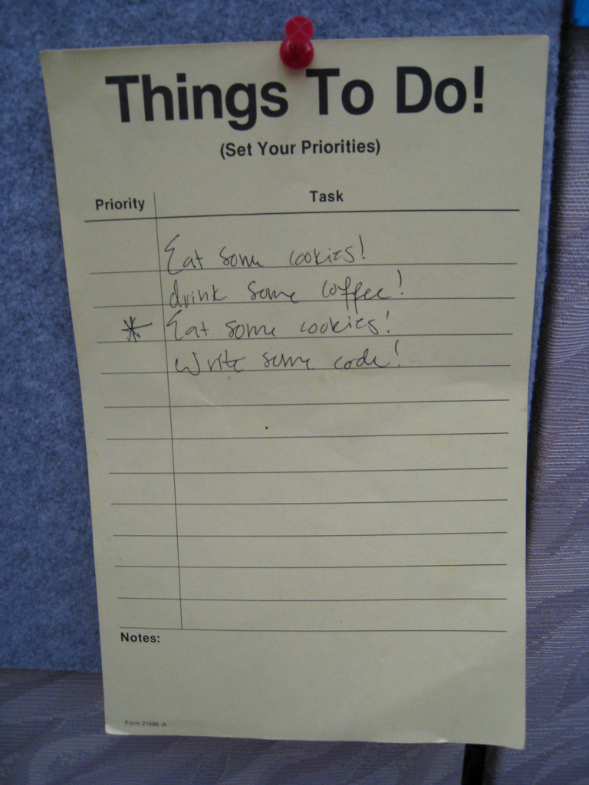
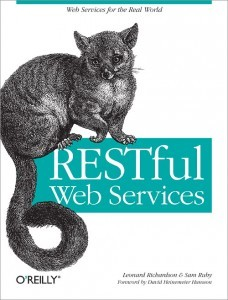
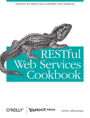

REST
Benjamin Erb
2012-02-09
Representational State Transfer
Distributed Architectures with HTTP


Benjamin Erb
Student @ Ulm University
Computer Science and Media
Interests: web technologies, scalabale architectures, distributed systems and mobile/ubiquitous computing
Contact:
www: benjamin-erb.de / ioexception.de
twitter: @b_erb
g+: b.erb.io/+
A distributed system is one in which the failure of a computer you didn't even know existed can render your own computer unusable.
A collection of independent computers that appears to its users as a single coherent system.


| Networks | Internet |
|---|---|
| LAN | |
| Client/Server Applications* | World Wide Web |
| SMTP & IMAP/POP3 | |
| P2P Applications* | Bit Torrent |
| Skype |
(*): Applications are a set of components and protocols in this context.
We need a way to incorporate communication and coordination into our code.
public class EchoServer
{
public static void main(String[] args) throws IOException
{
ServerSocket serverSocket = new ServerSocket(4711);
Socket socket = null;
while ((socket = serverSocket.accept()) != null)
{
int b;
while ((b = socket.getInputStream().read()) != -1)
{
socket.getOutputStream().write((byte) b);
}
}
}
}
public class EchoClient
{
public static void main(String[] args) throws IOException
{
Socket socket = new Socket("localhost",4711);
socket.getOutputStream().write("Hello World".getBytes());
InputStream is = socket.getInputStream();
InputStreamReader i = new InputStreamReader(is);
BufferedReader r = new BufferedReader(i);
String l;
while( (l = r.readLine()) != null){
System.out.println(l);
}
}
}
Because it is a very bad idea most of the time. By not using existing application-layer protocols, you lose:
Dedicated middleware systems are available to provide these features as an abstraction layer, such as
JMS, AMQP, ØMQ, etc.
var zmq = require('zeromq')
var zmqSocket = zmq.createSocket('req')
//Callback for receiving messages
zmqSocket.on("message", function(msg) {
console.log("Received msg:" + msg);
});
//connect to message queue
zmqSocket.connect("tcp://localhost:5555");
//Sending messages
zmqSocket.send("Hello");
Sun RPC, CORBA, Java RMI, Apache thrift, etc.
public interface Adder extends Remote
{
public int add(int a, int b) throws RemoteException;
}
public class RemoteAdderImpl extends UnicastRemoteObject implements Adder
{
protected RemoteAdderImpl() throws RemoteException
{
super();
}
@Override
public int add(int a, int b) throws RemoteException
{
return (a+b);
}
}
Create and register object (JVM A):
Naming.bind("rmi://localhost/adder", new RemoteAdderImpl() );
Access remote object (JVM B):
Adder adder = (Adder) Naming.lookup("rmi://localhost/adder");
int result = adder.add(1,1);
adder.add(1,1) looks like a regular statement thanks to RMI.
Note that both JVMs can be hosted on different machines.
The idea of message systems is really cool, but they can't traverse our corporate firewalls!
Why not use HTTP for messaging?! Port 80 is already open! I like XML.
SOAP. Simple Object Access Protocol. Except it's not Simple, it's Complicated. And it's not about Objects, it's about RPC. So, really: CRAP
Using the Hypertext Transfer Protocol as a low-level, interchangable transport protocol for XML-encoded messages is not the same as "web".
Can we build distributed applications using the web like it is supposed to, embracing its ideas and concepts?
http://thehost.tld:8080/path/to/it?name=value#foo \__/ \______________/\_________/ \________/ \_/ | | | | | scheme authority path query fragment
Also, cool URIs don't change!
The Hypertext Transfer Protocol (HTTP) is an application-level protocol for distributed, collaborative, hypermedia information systems. It is a generic, stateless, protocol[…].
TCP/IPGET /foo HTTP/1.1 Host: erb.io
HTTP/1.1 200 OK Date: Wed, 04 Jan 2012 17:01:59 GMT Server: myserver/0.0.7 Last-Modified: Wed, 25 Nov 2011 12:13:15 GMT Etag: "3ab23c-21f-12058638" Content-Length: 11 Connection: close Content-Type: text/plain; charset=UTF-8 hello world
| safe | idempotent | cachable | |
|---|---|---|---|
| HEAD | ✓ | ✓ | (✓) |
| GET | ✓ | ✓ | (✓) |
| PUT | ✓ | ||
| DELETE | ✓ | ||
| POST |
| Operation | in SQL | in HTTP |
|---|---|---|
| Create | INSERT | POST / PUT |
| Read | SELECT | GET / HEAD |
| Update | UPDATE | PUT / POST |
| Delete | DELETE | DELETE |
Please note: The comparison may be flawed on closer consideration. SQL is about manipulating data sets. REST is about transforming application state changes via hypermedia, HTTP and URIs.
(very incomplete list, only some exampless)
| 1xx | informational | 100 | Continue |
|---|---|---|---|
| 2xx | sucess | 200 | Ok |
| 3xx | redirection | 300 | Multiple Choices |
| 301 | Moved Permanently | ||
| 4xx | client error | 400 | Bad Request |
| 404 | Not Found | ||
| 409 | Conflict | ||
| 5xx | server error | 500 | Internal Server Error |
GET /foo HTTP/1.1 If-Modified-Since: Wed, 18 Nov 2011 19:21:45 GMT Host: erb.io
HTTP/1.1 200 OK Date: Wed, 04 Jan 2012 17:01:59 GMT Server: myserver/0.0.7 Last-Modified: Wed, 25 Nov 2011 12:13:15 GMT Etag: "3ab23c-21f-12058638" Content-Length: 11 Connection: close Content-Type: text/plain; charset=UTF-8 hello world
Resource has been changed (here: Last-Modified mismatch).
GET /foo HTTP/1.1 Host: erb.io If-None-Match: "103-4585efb972780;49711a471c400"
HTTP/1.1 304 OK Date: Wed, 04 Jan 2012 17:06:01 GMT Server: myserver/0.0.7 Etag: "103-4585efb972780;49711a471c400" Connection: close
Resource has not yet changed (here: ETag match).
GET /foo HTTP/1.1 Accept: text/plain, text/html Accept-Language: de; q=1.0, en; q=0.5 Host: erb.io
HTTP/1.1 200 OK Date: Wed, 04 Jan 2012 17:01:59 GMT Server: myserver/0.0.7 Etag: "3ab23c-21f-12058638" Content-Length: 10 Connection: close Content-Type: text/plain; charset=UTF-8 Content-Language: de hallo welt
Server returns german text representation, as requested.
GET /foo HTTP/1.1 Accept: application/msexcel Accept-Language: it Host: erb.io
HTTP/1.1 406 Not Acceptable Date: Wed, 04 Jan 2012 18:21:15 GMT Server: myserver/0.0.7 Content-Length: 22 Connection: close Content-Type: text/plain; charset=UTF-8 Content-Language: en Sorry, can't do that!
Content negotiation failed, server can't fulfil the request.
<a href="/foo#bar">Over there!</a>
<link rel="stylesheet" type="text/css" href="mystyle.css" />
<a rel="next" href="http://example.org/entries/3">next item</a>
<a rel="crush" href="http://social.net/hot-person">Hot!</a>
Semantic description of link relations.
<form action="http://example.org/users" method="post"> <input name="name" type="text" value="" /> <input name="login" type="text" value="" /> <input type="submit" /> </form>
POST /users HTTP/1.1 Host: example.org User-Agent: Mozilla/5.0 (Ubuntu; X11; Linux x86_64; rv:9.0.1) Gecko/20100101 Firefox/9.0.1 Accept: text/html,application/xhtml+xml,application/xml;q=0.9,*/*;q=0.8 Accept-Language: de-de,de;q=0.8,en-us;q=0.5,en;q=0.3 Accept-Encoding: gzip, deflate Accept-Charset: ISO-8859-1,utf-8;q=0.7,*;q=0.7 Connection: keep-alive Content-Type: application/x-www-form-urlencoded Content-Length: 28 name=Benjamin+Erb&login=b_erb
[...]each request from client to server must contain all of the information necessary to understand the request, and cannot take advantage of any stored context on the server.
What's the URI of the 2nd result page of search query?
http://foo.bar/query?sid=61AUOh6W1TA&page=next
What's the URI of the 2nd result page of search query?
http://foo.bar/query?term=uni+ulm&start=10
http://example.com/user/4711http://example.com/customer/23/order/1/product/0735611319http://example.com/search?term=foohttp://example.com/blog/the-post-title/comments#latestXML and JSON are also popular generic formats. Note however, that they don't have a standardized way of expressing links or forms.
REST is so trendy, let's rebrand our old HTTP API and call it RESTful from now on!

"homepage" (abstract resource)todo item (primary resource)list of todos (collection resource)http://example.com/todo/http://example.com/todo/itemshttp://example.com/todo/items/{id}We need URIs for the server implementation. Clients do not and should not need to know URIs a priori (except for the base URI of the service).
http://example.com/todo/items/{id}
| Method | Operation | Req. Entity | Resp. Entity |
|---|---|---|---|
GET |
Read an item | n/a | item representation |
PUT |
Update an item* | item representation | n/a |
DELETE |
Remove an item | n/a | n/a |
(*) If we allow clients to choose the URI of a new item by themselves, PUT can also be used for creating new items.
http://example.com/todo/items
| Method | Operation | Req. Entity | Resp. Entity |
|---|---|---|---|
GET |
Get a (partial) list | n/a | list (page) |
POST |
Create a new item | item representation | n/a |
application/jsonapplication/xmltext/plaintext/htmlapplication/x-www-form-urlencodedapplication/vnd.todo.item+jsonapplication/vnd.todo.list-v1+xml
We will use various representations in the following. Remember content negotiation: Clients will indicate representations they are interested in.
<!DOCTYPE html>
<html lang="en">
<head>
<meta charset="utf-8" />
<link rel="self" href="http://example.com/todo" />
</head>
<body>
<h1>ToDos</h1>
<h2>Navigation</h2>
<nav>
<ul>
<li><a href="http://example.com/documentation/todo/" rel="help">
Documentation</a></li>
<li><a href="items" rel="archives">
List all items</a></li>
<li><a href="items/latest" rel="http://example.com/todo/rel/latest">
Latest item</a></li>
<li><a href="items/urgent" rel="http://example.com/todo/rel/urgent">
Most urgent item</a></li>
</ul>
</nav>
<h2>New Item</h2>
<-- new item form -->
<h2>Filtered List</h2>
<-- filtered list form -->
</body>
</html> <!DOCTYPE html>
<html lang="en">
<head>
<meta charset="utf-8" />
<link rel="self" href="http://example.com/todo/items?cursor=4" />
<link rel="alternate" href="http://example.com/todo/items" />
</head>
<body>
<h1>ToDos</h1>
<h2>Navigation</h2>
<nav> … </nav>
<h2>List</h2>
<ol start="4">
<li class="http://example.com/documentation/todo/#item">
<a href="http://example.com/todo/items/4" rel="self">Eat some cookies</a>
</li>
<li class="http://example.com/documentation/todo/#item">
<a href="http://example.com/todo/items/5" rel="self">Drink some coffee</a>
</li>
</ol>
<ul>
<li><a href="items?cursor=6" rel="next">next page</a></li>
<li><a href="items?cursor=2" rel="previous">previous page</a></li>
</ul>
</body>
</html> GET)WHERE of SQLhttp://example.com/todo/items
?done=false&due_before=2012-02-15?priority=5&cursor=6{
"item":{
"link":{
"rel":"self",
"href":"http://example.com/todo/items/4"
},
"title":"Eat some cookies",
"description":"Don't forget the bright side of the dark side",
"priority":5,
"due":"2012-02-10",
"done":false
},
"links":[
{
"rel":"index",
"href":"http://example.com/todo"
},
{
"rel":"help",
"href":"http://example.com/documentation/todo/"
}
]
}GET /todo/items/4 HTTP/1.1 Accept: application/vnd.todo.item+json; q=0.8, text/html …
HTTP/1.1 200 OK
Last-Modified: Tue, 01 Feb 2012 12:45:26 GMT
ETag: "3-737060cd8"
Cache-Control: max-age=3600
Content-Type: application/vnd.todo.item+json
…
{
"item":{
"link":{
"rel":"self",
"href":"http://example.com/todo/items/4"
}
}
…
}POSTPOSTs to collection resource (/items)
<h2>New Item</h2>
<form name="new_item" method="post" action="items" enctype="application/x-www-form-urlencoded">
<input type="text" name="title" />
<input type="text" name="description" />
<input type="range" name="priority" min="1" max="5" />
<input type="date" name="due" />
<input type="submit" />
</form>
POST /todo/items HTTP/1.1 Host: example.org Content-Type: application/x-www-form-urlencoded … title=Buy+coffee&description=Out+of+caffeine&priority=5 &due=2012-02-12
HTTP/1.1 201 Created Location: http://example.com/todo/items/13 …
DELETE against the URIDELETE /todo/items/4 HTTP/1.1 …
HTTP/1.1 204 No Content …
GET /todo/items/4 HTTP/1.1 …
HTTP/1.1 410 Gone …
GETs a representation from the serverPUTs new representation to the serverPUT /todo/items/4 HTTP/1.1
Content-Type: application/vnd.todo.item+json
…
{
"item":{
"link":{
"rel":"self",
"href":"http://example.com/todo/items/4"
},
"title":"Eat some cookies",
"description":"Don't forget the bright side of the dark side",
"priority":5,
"due":"2012-02-10",
"done":true
},
"links":[…]
}HTTP/1.1 202 Accpeted …
GET /todo/items/4 HTTP/1.1 … HTTP/1.1 200 OK E-Tag: "3-737060cd8" …
PUT /todo/items/4 HTTP/1.1 If-Match "3-737060cd8" … HTTP/1.1 202 Accepted E-Tag: "4-123bcd21" …
PUT /todo/items/4 HTTP/1.1 If-Match "3-737060cd8" … HTTP/1.1 412 Precondition Failed …
http://example.com/todo/items/latesthttp://example.com/todo/items/urgentGET /todo/items/latest HTTP/1.1 …
HTTP/1.1 303 See Other Location: /todo/items/4711 …
Roy Thomas Fielding
Architectural Styles and the Design of Network-based Software Architectures
Chapter 5: "Representational State Transfer (REST)"
Dissertation (2000)
http://www.ics.uci.edu/~fielding/pubs/dissertation/top.htm
Hypertext Transfer Protocol -- HTTP/1.1
RFC 2616 (1999)
http://www.ietf.org/rfc/rfc2616.txt
The Atom Publishing Protocol
RFC 5023 (2007)
http://www.ietf.org/rfc/rfc5023.txt
Stefan Tilkov
REST und HTTP
2011, Dpunkt Verlag, 266 pages (german)
ISBN: 978-3898647328

Leonard Richardson, Sam Ruby
RESTful Web Services
2007, O'Reilly Media, 446 pages
ISBN: 978-0596529260

Subbu Allamaraju
RESTful Web Services Cookbook
2010, O'Reilly Media/Yahoo Press, 314 pages
ISBN: 978-0596801687

This work is licensed under a Creative Commons Attribution-NonCommercial-ShareAlike 3.0 Unported License.
Title image by bitzcelt, cc-by-nc-nd 2.0.
Icon set by picol, cc-by-sa 3.0.
Rage faces by ragefac.es, cc-by-nc-nd 3.0.
UlmAPI.de
datalove ♥ – a local group of open data enthusiasts
Interested in open data and building cool (web) stuff? Join us!
IOException.de
selected nerd stuff by CS students @uulm
We are always looking for new authors and guest contributions!
node.js
Single-threaded and event-driven
JavaScript outside your browser
ChaosSeminar (with Benjamin Erb, Michael Müller)
February 13, 2012; 20:00
H20, Uni Ulm